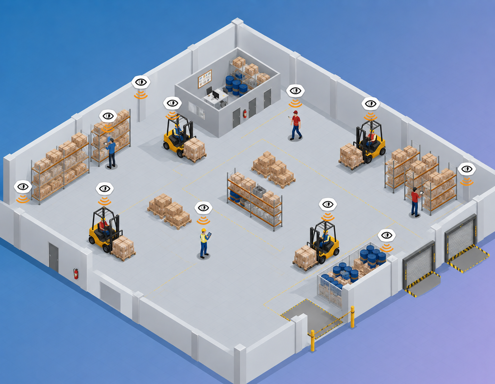

Insights
Real-time positioning
UWB anchors and wearables map where people and machines are on site—centimeter-scale accuracy from a few centimeters up to 50 meters, without relying on site Wi‑Fi.

Why real-time positioning matters
- See blind spots before a collision—workers get haptic alerts when equipment is too close.
- Works offline on site; no dependency on cellular or Wi‑Fi coverage.
- Measure near-misses and congestion instead of guessing from incident reports alone.
- Optimize traffic flow and exclusion zones using actual movement patterns.
Data & compliance
Data for ISO 45001 evidence, proactive risk management, and internal safety meetings.